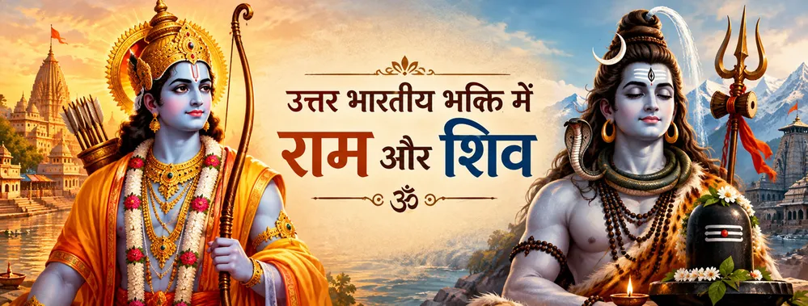

साझा पवित्र भूमि
काशी की स्थायी शिव-परंपरा राम-नाम और वैष्णव भक्तिपरक स्मरण के लिए भी महत्वपूर्ण भूमि बनी।

जीवंत भक्ति परंपरा
उत्तर भारतीय भक्ति परंपराओं में राम-केंद्रित और शिव-केंद्रित भक्ति अनेक बार एक ही पवित्र सांस्कृतिक धरातल पर मिलती हैं। काशी, रामचरितमानस और नाम-स्मरण इस मिलन के महत्वपूर्ण आयाम हैं।
इसका अर्थ यह नहीं कि हर समुदाय या ग्रंथ राम और शिव को बिल्कुल एक ही धार्मिक ढंग से प्रस्तुत करता है। अलग-अलग भक्ति धाराओं ने अपनी-अपनी भाषा विकसित की, फिर भी अनेक परंपराओं में दोनों के प्रति श्रद्धा साथ-साथ दिखाई देती है।
उत्तर भारतीय भक्ति में राम और शिव का मिलन साझा स्मरण, श्रद्धा और भक्तिपरक काव्य के माध्यम से समझा जा सकता है।
भक्ति की चार धाराएँ
काशी की स्थायी शिव-परंपरा राम-नाम और वैष्णव भक्तिपरक स्मरण के लिए भी महत्वपूर्ण भूमि बनी।
रामचरितमानस शिव और राम को एक साझा भक्तिपरक दृष्टि में रखता है, विशेषकर शिव-पार्वती संवादों के माध्यम से।
राम-नाम तब भक्ति-समुदायों के बीच सेतु बनता है जब नाम-स्मरण को श्रद्धा, समर्पण और अंतर्मुखी परिवर्तन की साधना माना जाता है।
अनेक भक्तिपरक अभिव्यक्तियाँ राम और शिव दोनों का सम्मान करती हैं, बिना इस आवश्यकता के कि आराध्य देवताओं की विशिष्ट पहचान मिटा दी जाए।
शास्त्र और परंपरा
इस संबंध को कई स्तरों पर पढ़ना चाहिए—महाकाव्य साहित्य, पौराणिक परंपराएँ, रामचरितमानस और क्षेत्रीय भक्ति-आचरण। इन स्रोतों की भाषा हमेशा एक जैसी नहीं है, लेकिन साथ मिलकर वे समझाते हैं कि उत्तर भारतीय पवित्र संस्कृति में राम और शिव इतने निकट कैसे जुड़े।
उत्तर भारतीय भक्तिस्मृति के लिए रामचरितमानस विशेष रूप से महत्वपूर्ण है। इसमें शिव द्वारा राम-महिमा का वर्णन और शिव के प्रति बार-बार प्रकट श्रद्धा भक्ति-समन्वय की एक सशक्त साहित्यिक अभिव्यक्ति है।
एक शांत चिंतन
अनेक भक्तों के लिए राम और शिव का मिलन दो उपासना-रूपों में से किसी एक को चुनने का आग्रह नहीं, बल्कि श्रद्धा, स्मरण और विनम्रता को भक्ति की साझा नींव के रूप में पहचानने का निमंत्रण है।
भक्तों के सामान्य प्रश्न
अनेक भक्ति-समुदाय दोनों का सम्मान करते हैं, हालांकि पूजा-पद्धति और धार्मिक व्याख्या परंपरा तथा क्षेत्र के अनुसार अलग हो सकती है।
यह उत्तर भारतीय भक्ति को एक महत्वपूर्ण साहित्यिक अभिव्यक्ति देता है जिसमें शिव राम की महिमा कहते हैं और राम शिव का सम्मान करते हैं, विशेषकर शिव-पार्वती संवादों के ढाँचे में।
नहीं। साझा श्रद्धा के साथ-साथ अलग-अलग धार्मिक, अनुष्ठानिक और क्षेत्रीय परंपराएँ भी बनी रह सकती हैं।
काशी शिव से गहराई से जुड़ी है और साथ ही राम-नाम तथा उत्तर भारतीय भक्ति का भी प्रमुख केंद्र रही है; इसलिए यह इन भक्तिपरक स्मृतियों के मिलन का स्वाभाविक स्थान बनती है।